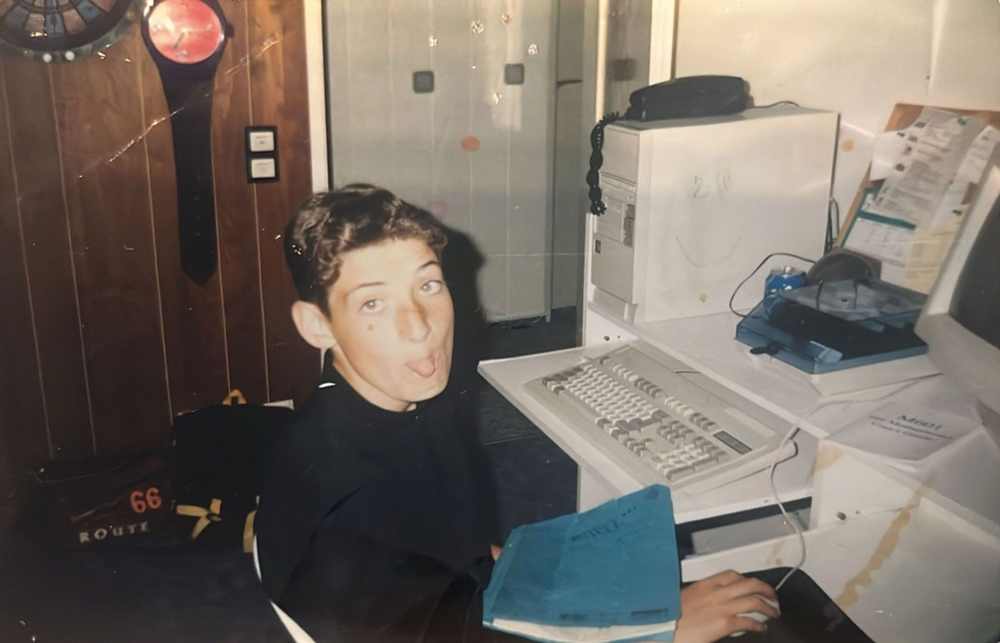

Auf Sendung seit 1999.
Ich bin Fares Chahrour. Seit 27 Jahren verkaufe ich am Telefon, und bis heute jeden Morgen selbst. Ich trainiere Verkäufer und Teams darin, im Gespräch die richtige Frequenz zu finden.
Einschalten: Erstgespräch, 30 Min.Kostenlos, über Calendly (Datenschutz).
Sender 1 von 5
Vorbereiten
Zielkunde, Anlass, Gesprächsziel und Gesprächshaltung klären.
Mit einer guten, relevanten Frage beginnen.

Gelernt im Gespräch, nicht im Seminar.
- StartTechnische Ausbildung bei Procter & GambleIndustriemechaniker, danach der Wechsel in den Vertrieb.
- 1999Erster Tag im Vertrieb
- 2000–19Geschäftsstellenleiter, Deutsche VermögensberatungEigene Struktur aufgebaut, jeden Berater selbst ausgebildet. AEVO.
- HeuteJeden Tag selbst in der B2B-Akquise80 bis 110 Anrufe am Tag
19Jahre Finanz- und
Vermögensvertrieb
Wo das erste Telefonat alles entscheidet.
In der Vermögensberatung habe ich eine eigene Vertriebsstruktur aufgebaut und jeden Berater selbst ausgebildet. Viele wollen dort Teams aufbauen und haben keine Zeit, neuen Leuten das Telefonieren beizubringen.
Genau dort startet Vertriebscoach im Ohr seinen ersten Piloten: neunzig Tage Telefontraining mit einem digitalen Coach. Ich begleite ihn als Praxis-Coach.
Vertriebscoach im OhrExterne Website →Drei Frequenzen für den Einstieg.
Welche passt, klären wir im Erstgespräch.
VertriebsPerformance Check
Für Geschäftsführung und Vertriebsleitung: Engpässe finden, Maßnahmen priorisieren.
Ansehen → RadVertriebsrad
Für Verkäufer und Selbstständige: acht persönliche Bereiche, ein Schwerpunkt.
Ansehen → 90PraxisPerformance 90
Für Verkäufer und Teams: neunzig Tage Training an echten Gesprächen.
Ansehen →„Klarheit verkauft stärker als Druck.“
„Ein Verkäufer braucht nicht immer jemanden, der ihm sagt, was er besser machen muss. Manchmal braucht er einfach jemanden, der ihm hilft, es selbst zu erkennen.“ Fares Chahrour
Dreißig Minuten auf Empfang.
Kostenlos. Wir klären, wie Sie heute verkaufen, was Sie verändern möchten und woran es bisher scheitert. Ich rede Ihnen kein Problem ein.
Erstgespräch vereinbaren